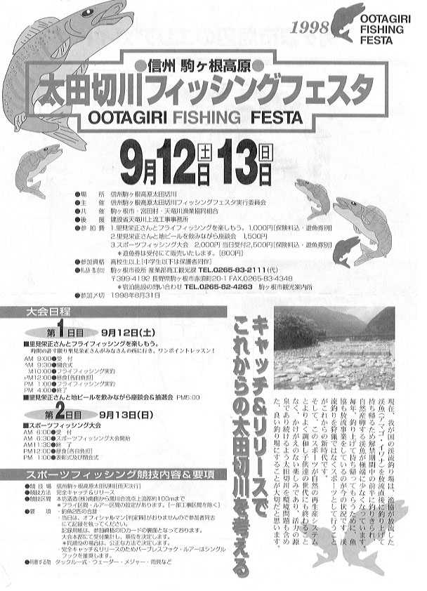
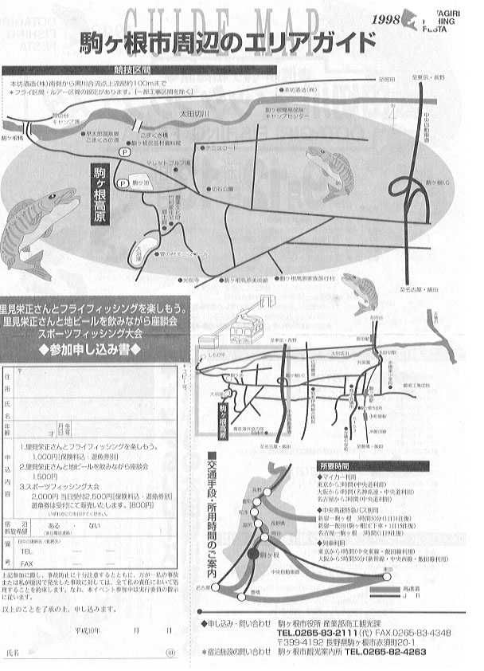

コラム
レポート「太田切川フィッシングフェスタ '98」 その２
はじめに
あの９月の熱気あふれる 太田切川フィッシングフェスタ '98 からはや一ヶ月が過ぎ、駒ヶ根の太田切川にも秋真っ盛りの風が吹いていると思われます。
今回のコラムでは、このイベントの成功のポイントと、太田切川の明日について、私なりにまとめてみました。
写真集 太田切川フィッシングフェスタ '98も参考にしてください。
さらに、フェスタのパンフレットはこちらをどうぞ。


太田切川フィッシングフェスタ'98 成功の要因
まず、フィッシングフェスタ'98 というイベントとしての成功を考えてみます。
成功のポイントは、
- 佐藤さんたち発起人の方々の努力と人脈
- 駒ヶ根市、宮田村という自治体の参加
- 里見氏、西山氏、両著名人の参加、トラウトフォーラムからの協力
- 地元のみなさん、漁協、協賛各社、雑誌社などの協力
- 太田切川の持つ魅力、釣り場としてのポテンシャル
などでしょうか。しかし、なんと言っても最初に挙げるべき一番の成功要因は、佐藤さんたち地元の釣り人たちを中心とした発起人の方々の熱意と努力の賜物だと思います。
ここで、私が当日、佐藤さんたちに聞いたメモを見てみますと、
- 自分としてはイベントを行ったことが無かったので、果たしてこのイベントがうまくできるのかそれが一番不安だった。
- 企画や準備など取り組みそのものは人脈のおかげでわいわいと頑張っているうちに今日まで来たので、それほど苦労したとは思っていない。
- 大変だったと言えば、会場の区間にまんべんなくイワナを放流することがとても大変だった。
- 普通のサラリーマンの集まりでなく、自営業とか比較的時間を持てる人たちが多かったのが有利であった。会社勤めの人がほとんどであったら、ここまでの取り組みにかける時間が持てなかったと思う。
- いろいろな人が参画してくれたのが成功のポイントではないか？発起人のうち、約３割の人は釣りをしない。
- 自治体の協力体制が得られていることが心強い。この試み（事業）の支援を市としても行っていきたいという声がある。
- 成功かどうかは３年、あるいは10年のスパンで見ていかなければならないだろう。
などという感想が記されています。私は、佐藤さんを中心とした発起人の方々が、資材の運搬、魚の放流、現地での進行など、休む間もなく動き回っていたのに感動しました。
第二の成功要因は、駒ヶ根市、宮田村という自治体の協力が得られていることだと思います。
お話を伺った駒ヶ根市の商工観光課、佐藤課長さんをはじめとして自治体のみなさんが精力的に動いてみえたのが印象に残りました。また、テントや椅子など機材の運用においても自治体の協力が得られたことは有利だったと思われます。
第三は、里見栄正さん、西山徹さんというフライフィッシング界の著名人が参加、協力されていたことも大きなポイントだと思われます。私も、釣具店のチラシを見て、里見さん、西山さんの実際の釣りを見てみたい！ と強く思いましたので。
また、トラウトフォーラムの方々が、はるばる東京から参加して活躍していたことも大きなポイントでしょう。
第四は、地元の観光業界、産業界、そして漁協の協力、各地の釣具店、メーカーなどの協賛、雑誌社などのメディアからの協力が得られたことがポイントだと思います。
お昼休みに話を伺えた漁協組合長の高坂さん、組合員の春日さん、地元ホテルの方など、いろんな立場の人が一つになっていることがよくわかりました。
第五は、太田切川の持つ魅力と釣り場としてのポテンシャルだと思います。それは、
- 交通の便の良さ
地元長野はもちろん、中央自動車道を使えば関東、中部、さらに関西圏までもが誘致可能なエリアになります。実際、当日もこれらのエリアからの参加者が大勢いました。太田切川の釣り場は駒ヶ根インターチェンジからごく近く、道順もすぐにわかります。 - 川の広さ
太田切川は、幾筋もの流れがあり、大勢の釣り人が入渓してもそれなりに釣りになります。また、渓相も瀬、淵、岩裏のたるみ、滝など変化に富んでおり、丸一日十分楽しむことができます。水も清冽、アルプスを望む景色も最高です。 - 周辺環境の充実
会場となったこまくさ橋の周辺には、売店、レストラン、トイレ、駐車場、キャンプ場、ホテル・旅館・民宿などが揃っており、遠方からの訪問、また、家族連れなどの利用にも十分対応できるようになっています。
夏、お父さんと息子さんはフライフィッシング、お母さんと娘さんはロープーウェーで駒ヶ岳へ....なんていう楽しみ方をすれば、あっと言う間に数日が過ぎると思います。
イベント成果のアピール
さて、やはり太田切川における川や自然と釣り人とを考える活動・取り組みとしてはこのイベントを来年、再来年も続けて初めて成功したと言えるでしょう。これは発起人代表の佐藤さんもおっしゃっていたとおりです。
今年より来年、来年よりも再来年....というふうに継続することによって、キャッチアンドリリース区間の設定とその後の運営がより確実なものになると思います。
私は、そのためには今回のイベント、さらに来年以降開くイベントの成果を広くアピールすることが大切だと考えます。具体的にはつぎのようなことを考えました。
○経済的な数字の裏付け
来場者数、イベント収支決算、など数字の積み上げによるわかりやすい成果の把握が必要だと思います。もっともこれはすでに関係者のみなさんがしっかり押さえられているようです。
今回のイベントで２日間の延べ参加者が286名という数字はかなりインパクトがあります。全国各地でこうした取り組みをしている方々にとっても大きな励みになるとでしょう。
また、寒河江川など、Ｃ＆Ｒ区間の運用が始まっている地域の関係者とも連絡を取って、区間設置後のライセンス売り上げの想定を行うことも考えられます。
○子どものためのＦＦスクール、女性のためのＦＦスクールなどの開催
次回のイベントでは、例えば、子どもや女性向けのフライフィッシングスクールを開催することによって、だいぶ広がりを見せているフライフィッシングをさらに社会に広めてゆく、太田切川がその舞台になることによってこの釣り場、Ｃ＆Ｒ区間の存在意義が多くの人々にもわかってもらえるのではないでしょうか？
都会では、たとえば河川敷や公園の芝生における「フライキャスティングスクール」というのはよくあるのですが、この太田切川であれば、実際の釣り場で本物の魚を相手にフライフィッシングスクールが開催できると思います。
河原は広く、安全に歩くことができますので、子どもたちや女性のみなさんにも十分フライフィッシングの楽しさがわかってもらえるでしょう。
○フィッシュウォッチングによる社会的アピール
先日のNHK総合テレビ、にっぽん川紀行「で放送されたのでご覧になった方も見えるとおもいますが、新潟県の奥只見にある北の岐川は、もう10年以上前から永年禁漁区に指定されていて、秋になると産卵のために遡上する大岩魚やサクラマスが淵に群泳するの姿を見ることが出来ます。「奥只見の魚を育てる会」では、秋にこうした魚をみるための「フィッシュウォッチング」を開催しています。
太田切川でも、川沿いの散策道や吊り橋から群れ泳ぐ岩魚がいつでも見られる、そんな心躍るような川になれば、地元の小中学生の写生大会とか、遠足とか、いろんな形で川と人とのつながりができるのではないかと思います。
例えば、上高地梓川のかっぱ橋の下のようにイワナが群れ泳ぐ太田切川ができたら素晴らしいですね。
○ふるさとの観光、産業振興とのリンク
地元のホテルの方が話しておられたのですが、最近は観光の形態が変化しており、これまでのように大勢でバスで訪れ、夜通し宴会で騒いでドワッと帰る...ような旅行は少なくなっているそうです。めいめい、あるいは気のあった仲間と来て、散策やスケッチ、ハイキングなどを楽しんでいくグループが増えているとのことでした。ですから、釣り人を中心に太田切川を様々な目的で訪れる人が増えるといいなと思います。また、駒ヶ根市においては太田切川沿いの散策道に紅葉などの並木を植える計画があるそうなので、こうした整備とも関連づけたらすばらしいですね。
キャッチアンドリリース区間の設置に向けて 展望と課題
さて次に、今後の太田切川におけるキャッチアンドリリース区間の設置に向けての課題と展望を述べます。
課題１ イワナ、アマゴが自然繁殖できる環境づくり
今回のイベントにおいては、約4,000匹のニッコウイワナ系の養殖イワナが放流されたわけですが、理想的には太田切川に昔からいる種類のイワナ、いわゆる在来種が自然の環境の中で繁殖・増加できる川づくりをめざすことが重要でしょう
アメリカの自然保護団体「トラウト・アンリミテッド」では、在来魚類の個体数は、放流よりもむしろ、個体数を減少させた原因を取り除いたときに増加するとの考えが中心に据えられており、人工放流に対しては、限定的な役割を認めているだけだそうです。
（引用：「川の自然を生かすアメリカのレクリエーション」、（財）日本生態系協会 発行）
では、太田切川において、イワナ・アマゴの個体数減少の原因は何でしょうか？私の考えるところでは、
- 洪水による土砂の流出、渓相の悪化、砂防工事による上下流移動の阻害
- 釣り人による捕獲
- 水質の悪化、水量の減少
などではないでしょうか。その対策としては、以下のようなことを考えました。
○太田切川の河川環境の復元、再生
・落差工の改修
現在もすでに既設の砂防ダムについて、緩い勾配にしたり、魚道の機能を付加する改修が行われています。しかし、今後改修が行われる予定の下流部においては、長野県が管理する河川となっているため、こうした改修工事は計画されていないようです。
・川岸の植物の復元
太田切川の広い河原には、植物があまり無く、直射日光も当たりますし、陸生昆虫が棲める空間が少ないと感じました。そこで、河畔での高い木の植樹や、洪水の影響を受けにくい岸沿いのスペース、岩組の護岸の一部などにはもうすこし水辺の植物を復元すると良いのではないでしょうか？
今回のイベントをきっかけとして、こうした多自然型の川づくり、落差工の改修を強く河川管理者に要請する必要があると思います。
○釣り人による漁獲の制限、種沢の確保
・釣獲の制限
これについては、当然ながらＣ＆Ｒの推奨、Ｃ＆Ｒ区間の設置を強力に進める必要があります。
・永年禁漁区間の設定
上流域においては、駒ヶ根橋の左岸に渓相が良く水量の豊富な沢が出てきていましたので、こうした枝沢や上流域を永久的に禁漁とすることによって、在来種が自然繁殖できる聖域を確保することが必要です。さらに、残念なことですが、禁漁区間の設置と共に強力な密漁監視体制の確立が重要です。
前に述べた北ノ岐川では、地元の人々や「奥只見の魚を育てる会」の会員のみなさんの努力により、17年ほど前から永年禁漁河川に指定されており、盛期には銀山湖から遡上する大イワナやサクラマスが川に溢れるほど見られる川として有名です。
○河川流量の確保
・農業用水の取水との調整
太田切川では、駒ヶ根橋の上流右岸に農業用水の取水口があり、下流の農地に導水される水が取水されています。このため、ここから下流の区間では河川の流量が不足しがちだそうです。この問題の解決は難しいかもしれませんが、農閑期においてはもっと河川の方へ水を流してもらえるように調整してはどうでしょうか？
・上流域への水源林整備
太田切川の上流域は急峻な駒ヶ岳の山麓なのですが、水源函養林としての広葉樹林を整備する必要があると思います。
課題２ 漁協との調整・餌釣りを楽しむ人々との協調
キャッチアンドリリース区間の設置に向けては、天竜川上流漁協との調整・協力が不可欠です。この取り組みに理解の深い組合長さん始め、多くの組合員の方に理解していただけるよう、地道な取り組みが必要です。
また、キャッチアンドリリースという行動は、フライ・ルアーの釣りを楽しむ方には比較的なじみが深いと思われるのですが、まだまだ餌釣りの人の大部分にとっては馴染まない考え・行為なのではないでしょうか？しかし、自然溢れる太田切川でいつまでも楽しい釣りを楽しむために、この取り組みを餌釣りの人々にもＰＲし、協調できる取り組みとして行くことが大事だと思います。
聞くところでは、寒河江川のＣ＆Ｒ区間には、餌釣りの人も大勢訪れて尺上のイワナの強い引きを楽しんでいるそうです。ですから、太田切川を訪れる餌釣りの人々にも、寒河江川で餌釣りを楽しんだ人の声を伝えることによってキャッチアンドリリースの効果を理解していただけるのではないでしょうか？
展望１ 全国ＣＲ区間スタッフミーティングの開催
これは、トラウトフォーラムのみなさん、あるいは西山徹さんや里見栄正さん、さらには釣り雑誌の編集部各位への私からのお願いになるのですが、全国各地で釣り場の保全や在来種の保存、キャッチアンドリリース区間の設置などを取り組んでいる人々が集って、現在の取り組みの紹介や問題点の討議などを行うフォーラムを開催してはどうかと思います。
キャッチアンドリリースの効果、訪れた人々の感想、地元の人々の意見、自治体の人々の考え、などなどを話し合える場所を設ける必要があると強く思います。
ちなみに、「フライの雑誌」 季刊第42号、p113のトラウトフォーラム通信によりますと、現在日本でＣ＆Ｒ区間が設定されている河川は、
○渚滑川／北海道紋別郡滝上町
○月光川（ダム下）／山形県遊左町
○寒河江川（ダム上）大井沢地区８km区間／山形県西川町
Ｃ＆Ｒ区間設定に向けて活動が進められている河川は、
○川辺川上流域（筑摩川支流）／熊本県筑摩郡五木村
となっています。
展望２ 「太田切川フィッシングフェスタ '99～ 」に向けて
最後に、来年の太田切川フィッシングフェスタ '99に向けてのちょっとした希望などを記して、このコラムを締めくくりたいと思います。
○参加者へのアンケートの実施
大勢訪れてくれた参加者のみなさんの生の声、感想、意見などを把握するため、現地での書き込み、あるいは往復はがきによるアンケートを実施したらどうでしょうか？
○メディアへのアピール
今回のイベントは、釣具店などで配布されたチラシ、雑誌記事、自治体・建設省などのホームページなどでＰＲされたわけですが、来年はテレビや新聞などへの取材を働きかけて、よりいっそうのＰＲを行うと効果的だと思います。
○９月最後の週での開催
９月12日（土）～13日（日）にかけて行われた今回のイベントでは、最終日の夕方、イベント終了後に釣り人が大挙して押し寄せ、放流されたイワナをたくさん釣って帰ったそうです。残念といえば残念ですが、かと言ってこれらの釣り人を責めても現状ではどうしようもないことも事実です。
そこで、もし来年Ｃ＆Ｒ区間が設定されていない状態で再度このイベントを行うのであれば、禁漁となる１０月の直前の週末に開催することによって、少しでも翌年のシーズンに向けて多くの魚を残すことができると思います。
おわりに
先月仰ぎ見た駒ヶ岳の偉容を思い起こしつつこのコラムを書きました。
大勢のみなさんの努力と活躍で、太田切川にイワナやアマゴが群れ泳ぎ、老若男女たくさんの人が釣りを楽しめる日が来ることを願っております。
最後に、もう一度、関係者の方々にお礼を述べたいと思います。
コラム 目次へ
サイトマップ
ホームへ
お問い合わせ